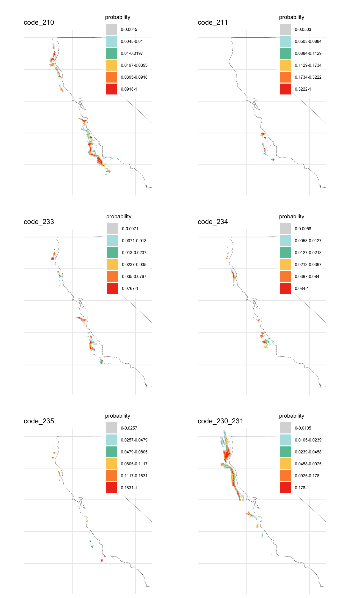
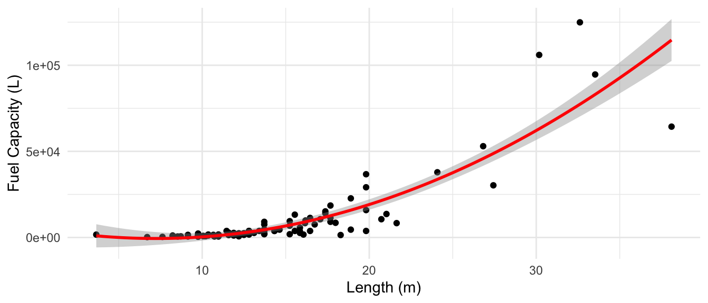
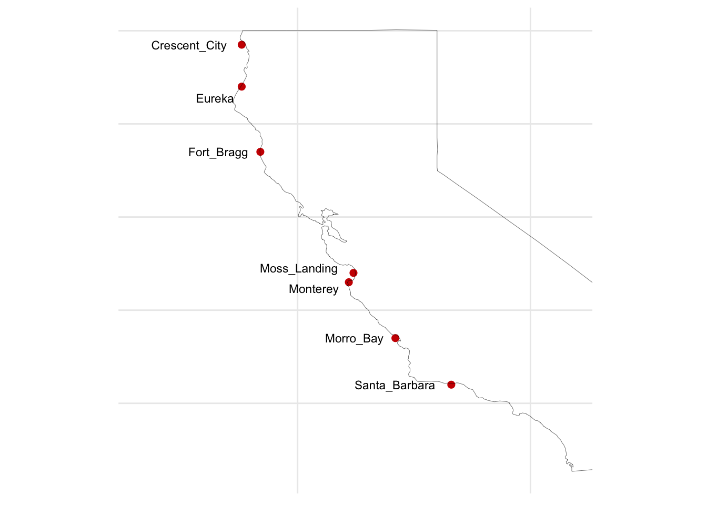
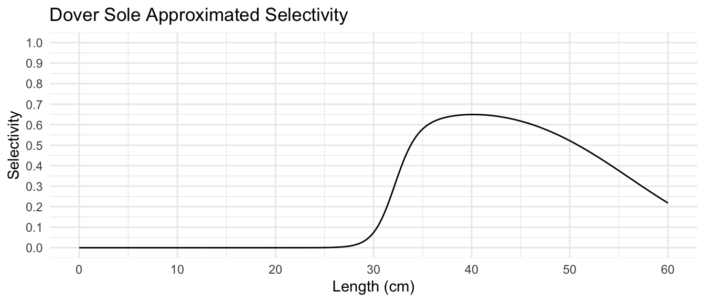
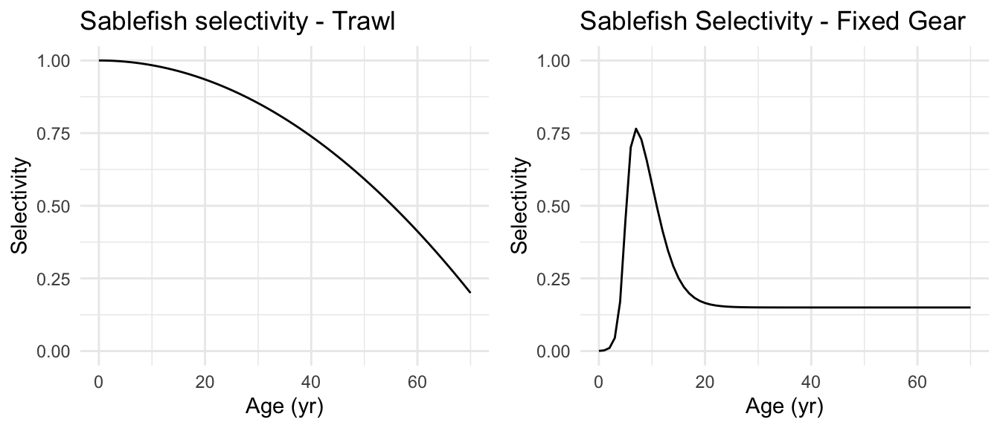
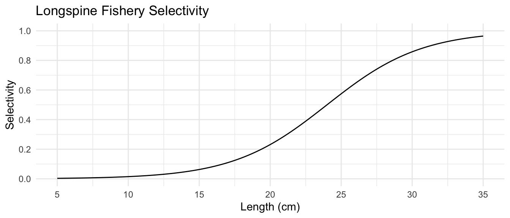
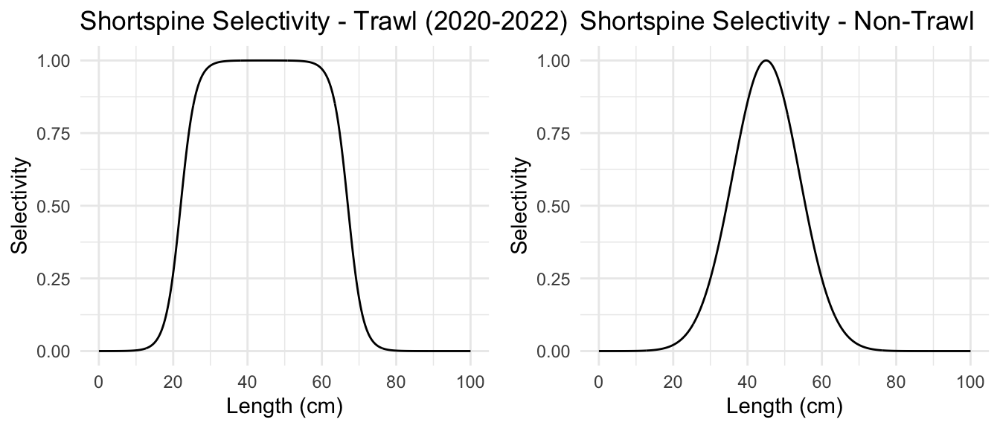

| port_id | port_name | total_lbs_all | relative_value | nb_vessels |
|---|---|---|---|---|
| 220 | Eureka | 31507436 | 42.88 | 60 |
| 223 | Fort_Bragg | 18594018 | 25.31 | 94 |
| 606 | Morro_Bay | 7179891 | 9.77 | 75 |
| 592 | Moss_Landing | 3268509 | 4.45 | 47 |
| 611 | Santa_Barbara | 2658614 | 3.62 | 39 |
| 201 | Crescent_City | 2446688 | 3.33 | 17 |
| 550 | Monterey | 1560629 | 2.12 | 11 |
2 Fisheries data
2.1 Fisheries
This section includes a description of the raw input datasets and the parameters considered to run the R routines related to the fisheries characteristics, including information on individual fishing vessels, gears, metiers, economics of the vessels, etc. These files should be stored and loaded from DISPLACE_raw_inputs/{project-name}/FISHERIES.
Such information is derived from available VMS, fish ticket (fishtix), and vessel registry data, through which we define the vessel parameters required to run DISPLACE. VMS data was obtained from the Bureau of Ocean Energy Management (BOEM) and is not publicly available. With the exception of vessel registry data—sourced from open sources—VMS and fishtix data are stored outside our cloud and repository infrastructure to comply with data sharing agreements (You’ll need to have this data locally in order to run it).
As for the data represented, no confidential data is displayed, and all information is aggregated to comply with the rule of three.
2.1.1 Vessels specifications
The DISPLACE input file vessels_specifications_per_harbour_metiers.csv contains information on individual or grouped vessel characteristics by harbor and metier (i.e., each vessel could be repeated more than once in this table if it belongs to more than one metier or lands in different ports). Métier is defined as a combination of gear and target species or fisheries that are distinctly defined.
The variables included in this dataset are detailed below and are referenced within the generate_vessels_specifications function in r/functions_fe.R:
VesselId: This variable corresponds to the vessel IDs. This could represent VMS ID, IMO number, or any other identification value with which we can distinguish individual vessels or grouped vessels. In our case, we use the vessel documentation number (docnum) extracted from VMS data, which corresponds to the primary Vessel Number in USCG datasets and the Vessel Registration Number in NOAA datasets, as a reference code to identify vessels. However, the DISPLACE nomenclature for vessel IDs consists of the country code followed by a numeric code (e.g., USA0001, USA0002, etc.). Therefore, we have recoded alldocnumvalues to align with it and stored a mapping key for future reference.nb_vessels: This is the number of vessels represented by a unique ID. If we have information on all vessels available, this will have a value of 1. If we have limited information at an individual vessel level or want to simplify the analysis, we can group several vessels under the same ID and fisheries characteristics and specify here the number of vessels in each group.
Port: This is the port from where the vessels operate, or ports where they land the catches. If a vessel operates in more than one port, we should create two distinct observations for that vessel, distinguishing between one harbor and another. For this study case, we are including only vessels operating from ports with high landing of the species of interest.To determine such ports, we have evaluated which ports receive the highest landings of the 4 species of interest based on the vms-fishtix merge data. As seen in Table 2.1, if we select those ports with at least 2% of landings, this reduces the number of ports for analysis to 7 harbors out of 45 available in the vms-tix dataset.
| vesselid | port_code | Port |
|---|---|---|
| ***** | 223 | Fort_Bragg |
| ***** | 606 | Morro_Bay |
dcf_gear: This defines the metier. For European fisheries, the DCF relates to metiers defined using Data Collection Framework (DCF) datasets. However, here we can define any metier by vessel length, gear, species mix, or any other criteria, based on any dataset not necessarily spatially defined. For our case study, we’ll define them using the declaration codes from VMS data. Wang et al. (2024) publication includes the declaration codes detailed below, among which we are interested inc(210, 211, 230, 231, 233, 234, 235).We are temporarily using declaration codes instead of specific gear, following the methods outlined by Wang et al. (2024). The selection of declaration codes is based on the gears of interest, which are grouped within the above declaration codes. However, we expect to receive a NOAA VMS and fish ticket merged dataset that will allow us to define gear more specifically, rather than relying on declaration codes. The gears we are interested in, which are the only ones used for our species of interest, are:
SET LONGLINE,HOOK & LINE,VERTICAL HOOK & LINE/PORTUGUESE LONGLINE,TROLL (GROUNDFISH OR OTHER FISH),FISH TRAP,TRAWL - FOOTROPE GREATER THAN 8 INCHES IN DIAMETER,SELECTIVE FLATFISH TRAWL SMALL FOOTROPE,TRAWL - FOOTROPE LESS THAN 8 INCHES IN DIAMETER,MIDWATER TRAWL,SINGLE-RIGGED TRAWL,PAIR TRAWL, andBOTTOM TRAWL.
| Decl. | Description (dominant gear types) |
|---|---|
| 210 | Limited entry fixed gear not including shorebased IFQ (pots/traps, bottom longline, longline, hook and line) |
| 211 | Limited entry groundfish non-trawl shorebased IFQ (pots/traps, bottom longline, longline, hook and line) |
| 220 | Limited entry midwater trawl gear non-whiting shorebased IFQ (midwater trawl for species other than whiting) |
| 221 | Limited entry midwater trawl Pacific whiting shorebased IFQ (midwater trawl for whiting) |
| 222 | Limited entry midwater trawl Pacific whiting catcher-processor sector (midwater trawl for whiting) |
| 223 | Limited entry midwater trawl Pacific whiting mothership sector; catcher vessel or mothership (midwater trawl for whiting) |
| 230 | Limited entry bottom trawl shorebased IFQ not including demersal trawl |
| 231 | Limited entry demersal trawl shorebased IFQ |
| 233 | Open access longline gear for groundfish |
| 234 | Open access groundfish trap or pot gear |
| 235 | Open access line gear for groundfish |
| 240 | Non-groundfish trawl gear for ridgeback prawn |
| 241 | Non-groundfish trawl gear for pink shrimp |
| 242 | Non-groundfish trawl gear for California halibut |
| 243 | Non-groundfish trawl gear for sea cucumber |
| 250 | Tribal trawl gear |
| 260 | Open access prawn trap or pot gear |
| 261 | Open access Dungeness crab trap or pot gear |
| 262 | Open access Pacific Halibut longline gear |
| 263 | Open access salmon troll gear |
| 264 | Open access California halibut line gear |
| 265 | Open access sheephead trap or pot gear |
| 266 | Open access Highly Migratory Species line gear |
| 267 | Open access Coastal Pelagic Species net gear |
| 268 | Open access California gillnet complex gear |
| 269 | A gear that is not listed above |
Gear: Despite the name of the variable, this field does not contain the actual gear used by the vessel but rather the name of the.shpfile that spatially defines the fishing effort for that specific gear or gear group. These spatial files must be available insideDISPLACE_raw_inputs/{project-name}/FISHERIES/SpatialLayers. In this analysis, we used declaration codes from VMS rather than the gear information available in the fish tickets. Therefore, this analysis relies on the gear information and fishing distribution associated with each declaration code indicated in variabledcf_gear.To define effort distributions, we applied the methodology used to generate the effort maps from Wang et al. (2024) on the VMS-tix merged data by declaration codes and filtering values for our target species. Additionally, we accounted only for vessels operating from our harbors of interest.
For the declaration codes of interest, we generated a fishing effort density map for each except for declaration code 231, for which we follow a similar approach to that taken by Wang et al. (2024), and aggregate with declaration code 230 (both related to trawl) since the former had very low overall fishing effort. Thus, 6 different
Gearlevels were defined to represent the métiers included in this analysis. These levels were assigned by matching the file names with the relevant declaration codes or combinations of codes, specifying whether the vessel in question is involved in that fishery. These spatial layers were saved as DISPLACE inputs inshpformat.The values from Wang et al. (2024) are expressed in \(km/km^2/year\). However, DISPLACE outputs represent fishing effort as cumulative fishing time in hours. To allow comparison with the DISPLACE outputs, we have adapted the methods described in Wang et al. (2024). Additionally, DISPLACE uses this fishing distribution to assess the probability that a simulated fishing vessel will fish at a given node. In discussions with Bastardie, we assessed the need to input such FE distributions in probability units. However, after testing the R routines with two different FE shapefile inputs—one based on cumulative times and the other on probabilities—we found that both approaches, given their identical distributions, produce nearly identical
vesselsspe_freq_fgrounds_quarter1.datfiles—the ones read by DISPLACE defining fishing probabilities.

VE_LENandTonnage: These parameters correspond to vessel length (m) and vessel tonnage (any unit).Tonnage values are not used as DISPLACE inputs, but included as a references. Further, we use tonnage values to extrapolate other parameters such as engine power or fuel tank capacity. Neither the VMS nor fish ticket data contain much information on vessel characteristics. To obtain such information, we have created two separate web scraping scripts in Python, available atpython/vessel_info_scraping.ipynb. These scripts mine information from the USCG Port State Information Exchange website and the NOAA limited entry dataset. While the latter downloads the entire available dataset, the former extracts information for a given list of vessels of interest. Therefore, to run it, we must create a list of vessels of interest (vessels_oi.csv), in our case, the ones included in the vessel specification files that we are generating.In addition to vessel length information, the data from USCG contains information for tonnage, both in net tons or gross tons. We will use the latter as it is the common size measure used by IMO.
For any missing length data, we can use the NOAA and ODFW dataset to supplement the information. Then for any additional missing values we will extrapolate length and tonnage values out of average values based on the available information.
name_gis_file_for_fishing_effort_per_polygon: the same file name indicated inGearrepresenting spatial effort by gear. In our case, these are fe_code_235, fe_code_233, fe_code_230_231, fe_code_234, fe_code_210, fe_code_211.name_gis_layer_field: parameter defining the variable in.shpexpressing the fishing effort, in our casefe. The units are not important since it can be interpreted in relative terms depending on what we specify in variableis_gis_layer_field_relative_numbers.is_gis_layer_field_relative_numbers: Here we indicate whether the effort variable represents relative values or not. The default value isFALSE. Regarding the implications of using effort distribution expressed in relative terms, the GIS layer per metier is used to draw some probabilities for the vessel on specific fishing grounds defined by each metier. R routines should be adapted in that aspect to incorporate the contents of the shapefile.If relative values are available, you can still use the R routines designed for absolute values. Simply adjust the GIS layer to reflect the relative importance on a linear scale. For example, if some areas are 100 times more likely to be visited than others, assign a value of 1 to the less frequented polygon and 100 to the more frequented one.
Units available from Wang et al. (2024) are in \(km/km^2/year\). However, DISPLACE outputs express fishing effort as cumulative fishing time in hours. Therefore, we have adapted Wang et al. (2024) methods to allow for comparison with the DISPLACE outputs.
xfold_gis_layer_field: unknown. Default value1.NOTE: Bastardier mentioned that if we do the trick suggested above relative to the relative units, then we don’t need this term. What value should we assign to it if we don’t need it, 0? We should further clarify this parameter and see the implications of using effort expressed in km/km²/yr.
{population code}_kg_h: This variable defines the catching capacity per fishing hour of a vessel or group of vessels for each population included in our analysis. Each population will have its own variable. For instance, our analysis includesSAB_kg_h,SJU_kg_h,SJZ_kg_h, andMIP_kg_h. This can be understood as a measure of CPUE for each individual vessel. However, it is primarily used in the simulation to define the rate of fishing and determine how much time is required to fill the storage capacity of each vessel.mean_kW: Mean engine power. The only reliable dataset with engine power is the one shared by the ODFW. However, this is not complete and most of our vessels of interest are missing. The second dataset we could use is a GFW dataset of vessel metadata. However, the ID numbers for our vessels of interest do not match the ones used in the GFW dataset (SSVID and IMO), so we cannot merge the tables. For this reason, for those that can not be assigned using ODFW data, we will use vessels information from the GFW dataset with similar characteristics to ours to define a simple regression and establish an expression that allows us to estimate engine power from length and gear type.The regression defines engine power as a function of vessel length, tonnage, and fishing class. While length and tonnage can be directly applied to our
vessels_specificationsdataframe, the fishing classes used by GFW differ from ours. Therefore, we have established a mapping based on gear to relate the declaration codes with GFW fishing classes. Based on the descriptions from Table 2.3 and by evaluating thegear_nameanddeclarationsvariables from the VMS-tix data, we have established the mapping in tbl-class-mapping. For vessels associated with more than one class, the engine power is assigned based on the averagemean_kWvalue across the classes to which they are assigned. Further, no predicted value will be lower than the minimum engine power from the dataset used to fit the model.This is a first approximation. The initial results show poor adjustments. We aim to obtain specific real data for each vessel. Alternatively, we will need to improve this approach. More vessel metadata including engine power can be find in the [iattc vessel registry](https://www.iattc.org/en-US/Management/Vessel-register?shortcut=RegionalVR#United%20States and the EU fleet registry
| code | gear_type |
|---|---|
| 210 | set_longlines |
| 211 | pots_and_traps |
| 230 | trawlers |
| 231 | trawlers |
| 233 | set_longlines |
| 234 | pots_and_traps |
| 235 | set_longlines |
fishing.speed.knotsandcruise.speed.knots: Average speed when the vessel is fishing and average speed when the vessel is cruising. We can get these values from the VMS data by discriminating fishing pings from the rest usingfishingornotvariable.fuel.tank.liter: Correspond to fuel tank capacity. This parameters is quite important because it influence the trip duration. A half-empty fuel tank will trigger the vessel to return to port, assuming half of the fuel is used to go back (other reasons for returning to port include a full fish hold, or at the end of a day if your vessel is set to do daily trips, i.e., when trip duration is set to <30h).There are no datasets available that allow us to match our vessel ids with tank capacity data. To establish
fuel.tank.liter, we have opted to fit a polynomial model that allows us to get estimates of fuel tank capacity (Figure 2.2). The few data available was scraped from a broker’s website selling fishing vessels in the USA. The web scraping scripts are available inpython/vessel_info_scraping.ipynb, and allowed to access data for 116 fishing vessels. The only variable across our vessels’ characteristics and this dataset that we could use to fit a model and predict estimates for our vessels was vessel length. As with the assignment of engine power, no predicted value for tank capacity will be lower than the minimum tank capacity from the dataset used to fit the model.

fuel.cons.h: Corresponds to fuel consumption per hour. As withfuel.tank.liter, this parameter is also quite important because it determines the trip duration. It conditions the fuel availability, triggering a port return when the fuel tank is half-empty, assuming that given the consumption levels in different operational phases, half or more of the remaining fuel is used to go back. For this parameter, we will temporarily use the consumption expression from Bastardie et al. (2013). Improved methods can be used, but for preliminary analysis purposes, this will suffice. This expression defines fuel consumption per hour based on engine power in kW and a multiplier adjusted for different operational phases, which will be defined under the variablesmultip.fuel.steaming,multip.fuel.fishing,multip.fuel.ret.port.fish, andmultip.fuel.inactive.fuel.cons.hvalues need to be reviewed. Better approaches for establishing such consumption levels are available in the literature and should be considered for the final analysis.
Operational phase multipliers: These are multipliers on the fuel consumption per hour depending on the phases of a trip, as fuel consumption can vary during these phases.multip.fuel.steaming: This multiplier adjusts the fuel consumption rate when the vessel is steaming, typically referring to traveling to or from fishing grounds.multip.fuel.fishing: This multiplier adjusts the fuel consumption rate when the vessel is actively fishing. Fuel consumption during fishing can vary depending on the type of fishing gear used and the fishing methods employed.multip.fuel.ret.port.fish: This multiplier adjusts the fuel consumption rate when the vessel is returning to port with its catch. The vessel might carry extra weight due to the fish caught, which could increase fuel consumption.multip.fuel.inactive: This multiplier adjusts the fuel consumption rate when the vessel is inactive, such as when it is docked at port or anchored at sea. During this phase, the vessel would consume less fuel compared to active operations. It is also used for gillnetters setting nets at very low speeds, thus decreasing fuel consumption.In the absence of specific information, you can set all these multipliers to 1. However, for our preliminary analysis, we will use the values from Bastardie et al. (2013), with values of 1, 0.8, and 0.1 for the fishing, steaming, and inactive states, respectively. For fuel consumption when returning to port, we will use a value of 1.1, also used in other DISPLACE analyses from the Bastardie repository, as it slightly increases fuel consumption when the vessel is returning to port carrying all the catch.
ave.storage.fish.kg: Fish storage capacity. This is the vessel’s carrying capacity, which is defined as the best observed historical catches for such a vessel. This creates a somewhat artificial ceiling for total catches. It is used to trigger a return to port. We will calculate it using fish ticket data.nb_pings_per_trip: This defines the frequency of changing fishing grounds within a trip. If this number is greater than 1, the vessel may shift between several fishing grounds instead of fishing in just one area. For instance, if the value is 1, the vessel will fish only in a single location and won’t switch grounds while fishing, which reduces navigation time between fishing areas. Higher values might result in larger times at sea as vessels switch more constantly between distant fishing grounds. After several testing simulations, we have set this parameter to 1. This means that a vessel will fish on a single ground during a trip, without switching to a different ground, which would result in longer navigation times. By doing so, we achieved a fishing distribution that closely resembles the one described by Wang et al. (2024).trip.duration.h: Average trip duration per metier. This affects the times at sea in the simulation. We can test the effects if using maximum trip duration instead. Also, consider that when calculating, we’ll only group byvesselidand not byportandgear, since we are assuming this relates to the average trip duration capacity of a vessel regardless of the type of fishing it is participating in.Gamma_shapeandGamma_scale: These parameters are set to draw a time to rest in port between consecutive trips. The latest DISPLACE usage by the Basterie team is not using such parameters but rather the GoFishing decision tree, which will be covered in other sections. The default values are0.4485and336.7618, respectively, which won’t be used if the GoFishing decision tree is active.weekEndStartDay,WeekEndEndDay,WorkHoursStart,WorkHoursEnd: These variables can be used in the decision tree forstopFishingif a decision tree is provided in thedtreefolder. In the absence of such a tree, the return to port event is triggered by conditions such as a half-empty fuel tank, full fish holds, or the end of a daily trip (if the vessel’s specifications indicate a trip duration of less than 30 hours). Therefore, the trip duration can be flexible, lasting more than a week and not necessarily following a regular pattern. For week days a number of the week (1:7), for hours (1:24).vessel_range_km: Vessel range in kilometers, which defines how far a vessel can travel. Within the R routines, this parameter defines to which nodes an individual vessel has access to. Nodes outside that range, can not be visited. Currently, we calculate this by determining the maximum distance traveled among all trips and dividing it by 2 (round trip). Alternatively, we could reassess this by calculating the straight-line distance from the farthest point on a trip to the port, or the mean average distance travelled in each trip.NOTE: Any value above 4500 km yields an error in the R routines due to the straight-line issue mentioned above.
RelativeEffort: A measure of individual fishing effort (i.e., how much effort is exerted by that vessel or group of vessels). For instance, if a vessel is represented for different metiers (i.e., more than one row in the dataframe), then this can exert different fishing effort in each metier, summing up the distinct relative efforts to 1. Thus, for a vessel represented in multiple rows (different metiers), we have calculated its contribution to each metier in relative terms based on time.kW: This is a redundant term and considered a useless legacy. The default value isNA.
2.1.1.1 File overlook
Below is a sample of the vessels_specifications_per_harbour_metiers.csv input file, generated based on the above data (Table 2.5). Here we use made-up data for example purposes. Values do not reflect actual data.
| VesselId | nb_vessels | Port | Gear | RelativeEffort | VE_LEN | Tonnage | name_gis_file_for_fishing_effort_per_polygon | name_gis_layer_field | is_gis_layer_field_relative_numbers | xfold_gis_layer_field | dcf_gear | SAB_kg_h | SJU_kg_h | SJZ_kg_h | MIP_kg_h | mean_kW | fishing.speed.knots | cruise.speed.knots | fuel.cons.h | fuel.tank.liter | ave.storage.fish.kg | nb_pings_per_trip | Gamma_shape | Gamma_scale | trip.duration.h | multip.fuel.steaming | multip.fuel.fishing | multip.fuel.ret.port.fish | multip.fuel.inactive | weekEndStartDay | WeekEndEndDay | WorkHoursStart | WorkHoursEnd | vessel_range_km | kW |
|---|---|---|---|---|---|---|---|---|---|---|---|---|---|---|---|---|---|---|---|---|---|---|---|---|---|---|---|---|---|---|---|---|---|---|---|
| ***** | 1 | Eureka | fe_code_235 | 1.0000000 | 14.32560 | 21.01741 | fe_code_235 | fe | FALSE | 1 | 233 | 43.76349 | NaN | NaN | NaN | 135.1770 | 1.2669391 | 13.181264 | 108.12266 | 1097.9274 | 679.9344 | 2 | 0.4485 | 336.7618 | 10.647778 | 0.8 | 1 | 1.1 | 0.1 | 1 | 7 | 1 | 23 | 205.45033 | NA |
| ***** | 1 | Morro_Bay | fe_code_233 | 0.0240895 | 15.24000 | 43.00000 | fe_code_233 | fe | FALSE | 1 | 233 | 69.05565 | 4.97459 | NaN | NaN | 257.4246 | 1.2263158 | 7.185973 | 50.40188 | 2358.5337 | 22978.5171 | 2 | 0.4485 | 336.7618 | 19.625000 | 0.8 | 1 | 1.1 | 0.1 | 1 | 7 | 1 | 23 | 427.45122 | NA |
| ***** | 1 | Morro_Bay | fe_code_230_231 | 0.0073502 | 13.71600 | 52.00000 | fe_code_230_231 | fe | FALSE | 1 | 235 | 30.23801 | 25.75665 | 0.9432135 | NaN | 142.9478 | 0.7895349 | 7.551351 | 56.04933 | 60.0000 | 1477.3491 | 2 | 0.4485 | 336.7618 | 15.191026 | 0.8 | 1 | 1.1 | 0.1 | 1 | 7 | 1 | 23 | 232.29298 | NA |
| ***** | 1 | Morro_Bay | fe_code_230_231 | 0.2488255 | 18.71472 | 60.00000 | fe_code_230_231 | fe | FALSE | 1 | 233 | 22.77094 | NaN | NaN | NaN | 75.6079 | 0.6677419 | 11.554545 | 22.44880 | 884.4895 | 6163.4081 | 2 | 0.4485 | 336.7618 | 43.502632 | 0.8 | 1 | 1.1 | 0.1 | 1 | 7 | 1 | 23 | 215.06230 | NA |
| ***** | 1 | Moss_Landing | fe_code_234 | 0.1064538 | 15.54480 | 38.00000 | fe_code_234 | fe | FALSE | 1 | 233 | 57.12785 | NaN | 0.3364992 | NaN | 150.7665 | 0.9404372 | 8.359740 | 42.75297 | 962.8433 | 367.8631 | 2 | 0.4485 | 336.7618 | 8.662222 | 0.8 | 1 | 1.1 | 0.1 | 1 | 7 | 1 | 23 | 183.47074 | NA |
| ***** | 1 | Fort_Bragg | fe_code_234 | 0.1242751 | 11.61288 | 60.00000 | fe_code_234 | fe | FALSE | 1 | 210 | 38.76733 | 12.45022 | NaN | NaN | 131.7546 | 1.5638889 | 6.438851 | 27.22152 | 60.0000 | 1995.3512 | 2 | 0.4485 | 336.7618 | 22.131863 | 0.8 | 1 | 1.1 | 0.1 | 1 | 7 | 1 | 23 | 79.37515 | NA |
2.1.2 Economic data
Economic data has been extracted from NOAA’s fisheries explorer platform FISHEYE. This platform provides access to metrics describing certain vessel economic characteristics and groundfish fisheries, with data aggregated by gear groups, harbors, or size classes. Access to more granular data, preferably at the vessel level, has been requested and is still under consideration. In the meantime, we have used mean values, first assigning them by ports where available, and for the remaining cases, using the available gear group data. For vessels operating with more than one gear or from more than one port, average values have been applied.
There are two files related to economic data describing individual vessels and fisheries. We do not have information for these two yet. (WORK IN PROGRESS)
STECF/Economics_fs.csv: Using default values from MEESO study. The values displayed do not reflect actual data from the West Coast or anywhere else in the United States.Annual_depreciation_rate: the percentage by which an asset’s value decreases over the course of a year. It represents how much of the asset’s original cost is expensed as depreciation each year, based on its expected useful life.From the FISHEYE data, we can obtain both the vessel_market_value and vessel_replacement_value. Using these values, we could estimate the depreciation rate by calculating the percentage difference between the two. To estimate the annual depreciation rate, we would divide this percentage by the number of years from the vessel’s build year to the latest year for which FISHEYE provides information (i.e., 2022).
NOTE: Confirm with Bastardie if this refers only to the vessel or also the gear. FISHEYE includes both vessel and gear in this estimates (Confirm). Also, confirm the units, whether in % or per one.
Annual_discount_rate: In 2023, the U.S. Office of Management and Budget (OMB) provided guidance on discount rates through Circular A-94. The recommended discount rates remained consistent with previous years, with a 3% rate for projects involving public investments or intergenerational impacts. Therefore, we will use this value for our analysis.Annual_insurance_costs_per_crew: variableCrew paymentsin FISHEYE include wages, bonuses, benefits, payroll taxes, and unemployment insurance.
| fs_name | Annual_depreciation_rate | Annual_discount_rate | Annual_insurance_costs_per_crew | Annual_other_income | Crewshare_and_unpaid_labour_costs_percent | Landing_costs_percent | Nb_crew | Nb_Vessels | Opportunity_interest_rate | Other_annual_fixed_costs | Other_variable_costs_per_unit_effort | Standard_annual_full_time_employment_hours | Standard_labour_hour_opportunity_costs | Vessel_value |
|---|---|---|---|---|---|---|---|---|---|---|---|---|---|---|
| ****** | 0.05 | 0.03 | 2000 | 10000 | 0.2 | 0.1 | 5 | 1 | 0.04 | 5000 | 300 | 2000 | 15 | 1e+05 |
| ****** | 0.05 | 0.03 | 2000 | 10000 | 0.2 | 0.1 | 5 | 1 | 0.04 | 5000 | 300 | 2000 | 15 | 1e+05 |
| ****** | 0.05 | 0.03 | 2000 | 10000 | 0.2 | 0.1 | 5 | 1 | 0.04 | 5000 | 300 | 2000 | 15 | 1e+05 |
fisheries_economics_variables.csv: Using default values from MEESO study. The values displayed do not reflect actual data from the West Coast or anywhere else in the United States.
| VE_REF | Nb_Vessels | Nb_crew | Annual_other_income | Landing_costs_percent | Crewshare_and_unpaid_labour_costs_percent | Other_variable_costs_per_unit_effort | Annual_insurance_costs_per_crew | Standard_labour_hour_opportunity_costs | Standard_annual_full_time_employment_hours | Other_annual_fixed_costs | Vessel_value | Annual_depreciation_rate | Opportunity_interest_rate | Annual_discount_rate |
|---|---|---|---|---|---|---|---|---|---|---|---|---|---|---|
| ****** | 1 | 3 | 4790 | 0.05 | 27.9 | 587 | 1500 | 26 | 2000 | 14000 | 3e+05 | 4 | 4 | 4 |
| ****** | 1 | 3 | 4790 | 0.05 | 27.9 | 587 | 1500 | 26 | 2000 | 14000 | 3e+05 | 4 | 4 | 4 |
| ****** | 1 | 3 | 4790 | 0.05 | 27.9 | 587 | 1500 | 26 | 2000 | 14000 | 3e+05 | 4 | 4 | 4 |
2.1.3 Harbors
We will generate the harbours.dat file containing the harbors of interest based on the selection performed before.
| port_name | lon | lat | idx_port |
|---|---|---|---|
| Crescent_City | -124.2 | 41.7 | 1 |
| Eureka | -124.2 | 40.8 | 2 |
| Fort_Bragg | -123.8 | 39.4 | 3 |
| Monterey | -121.9 | 36.6 | 4 |
| Moss_Landing | -121.8 | 36.8 | 5 |
| Morro_Bay | -120.9 | 35.4 | 6 |
| Santa_Barbara | -119.7 | 34.4 | 7 |

2.1.4 Selectivity
The file fishing_gear_selectivity_ogives_per_stock.csv contains the selectivity of each gear for each species by size bin. This information was extracted from the respective stock assessments. However, due to the lack of data from the original assessments, selectivity curves were approximated based on the following figures: Figure 33 from Johnson, Wetzel, and Tolimieri (2023) for sablefish, Figure 85 from (wetzel2021doversole?) for Dover sole, Figure 43 from Stephens and Taylor (2013) for longspine thornyhead, and Figure 22 from Zahner et al. (2023) for shortspine thornyhead.




| metier_name | met | stock | sz group 1 | sz group 2 | sz group 3 | sz group 4 | sz group 5 | sz group 6 | sz group 7 | sz group 8 | sz group 9 | sz group 10 | sz group 11 | sz group 12 | sz group 13 | sz group 14 |
|---|---|---|---|---|---|---|---|---|---|---|---|---|---|---|---|---|
| fe_code_210 | 0 | MIP | 0.00e+00 | 0.0000000 | 0.0000000 | 0.0000006 | 0.0002563 | 0.0740046 | 0.6124721 | 0.6447205 | 0.5672511 | 0.4074960 | 0.2183761 | 0.0815591 | 0.0212768 | 0.0021564 |
| fe_code_210 | 0 | SJZ | 7.46e-04 | 0.0044963 | 0.0265970 | 0.1418511 | 0.5000000 | 0.8581489 | 0.9734030 | 0.9955037 | 0.9992540 | 0.9998766 | 0.9999796 | 0.9999966 | 0.9999994 | 0.9999999 |
| fe_code_210 | 0 | SAB | 8.03e-05 | 0.0001093 | 0.0001525 | 0.0002195 | 0.0003274 | 0.0005104 | 0.0008412 | 0.0014881 | 0.0028927 | 0.0064091 | 0.0172076 | 0.0621138 | 0.3216720 | 0.5350325 |
| fe_code_210 | 0 | SJU | 3.70e-06 | 0.0000836 | 0.0012039 | 0.0111090 | 0.0657285 | 0.2493522 | 0.6065307 | 0.9459595 | 0.9459595 | 0.6065307 | 0.2493522 | 0.0657285 | 0.0111090 | 0.0005200 |
| fe_code_211 | 1 | MIP | 0.00e+00 | 0.0000000 | 0.0000000 | 0.0000006 | 0.0002563 | 0.0740046 | 0.6124721 | 0.6447205 | 0.5672511 | 0.4074960 | 0.2183761 | 0.0815591 | 0.0212768 | 0.0021564 |
| fe_code_211 | 1 | SJZ | 7.46e-04 | 0.0044963 | 0.0265970 | 0.1418511 | 0.5000000 | 0.8581489 | 0.9734030 | 0.9955037 | 0.9992540 | 0.9998766 | 0.9999796 | 0.9999966 | 0.9999994 | 0.9999999 |